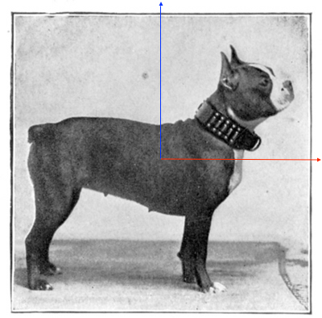

变换矩阵：
[ a, b, tx]
[ c, d, ty]
[ 0, 0, 1]
2D-Trans
0 degree
1 x
提示:
点击 Transform 开始变换(快捷键T), 点击 Reset 重置(快捷键R)
你可以通过设置 a b c d tx ty 的值来控制变化矩阵从而完成2d变换, 这需要一点图形学和矩阵的知识。2D 变换可以看成平面点齐次坐标的变换
你还可以通过设置 scale 和 angle 的值来完成伸缩/旋转变换， 这些变换实际转换为进一步修改变换矩阵中 a b c d tx ty 的值来实现
©slacr 2024-4